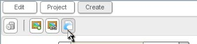
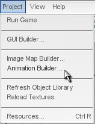
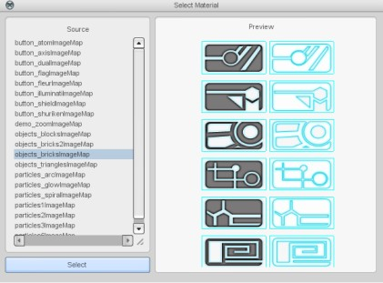
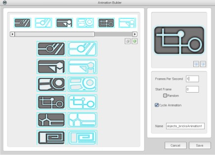

Using the Animation Builder
| To do this, we use the Animation Builder, which can be opened from either the Create Tab (as shown in Figure 1.1.1) or the Project menu (as shown in Figure 1.1.2). |
 Figure 1.1.1  Figure 1.1.2 |
| The first step in the Animation Builder is to select an imageMap (as shown in Figure 1.1.3). Choose an imageMap and click the Select button. |
 Figure 1.1.3 |
| The next step is to actually build your animation. (as shown in Figure 1.1.4). By just dragging and dropping, you can use whichever frames you want and put them in any order you want. Don't forget to check the settings in the bottom right. The Total Time parameter is very important for controlling the look of your animation. This screen can also be accessed from the object library by double clicking on the animation, so you don't have to guess about the time. |

Figure 1.1.4 |